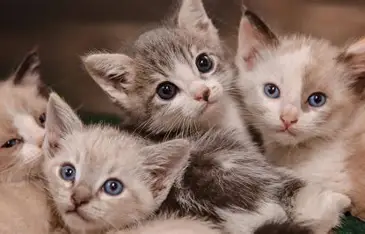
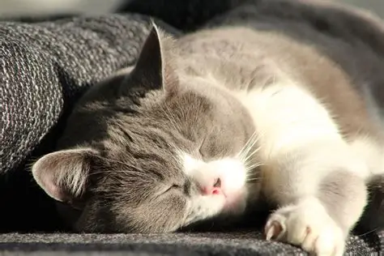
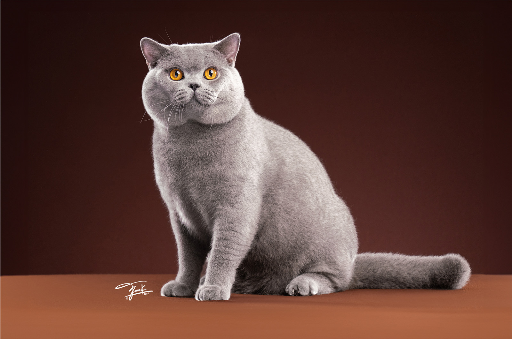
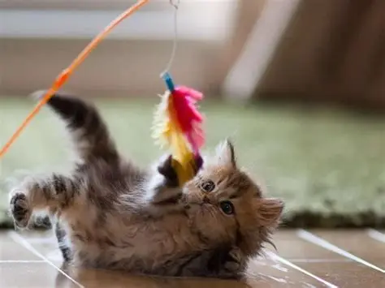
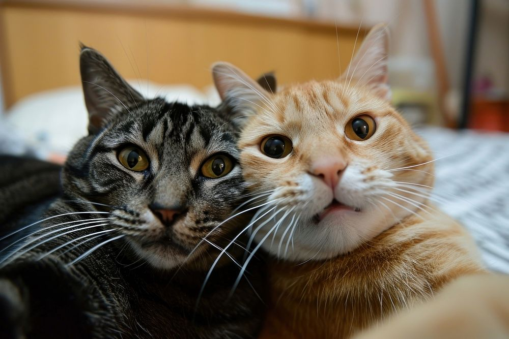

1. Nguồn gốc và quá trình thuần hóa
Mèo nhà (Felis catus) thuộc họ Mèo (Felidae), bộ Ăn thịt. Tổ tiên của chúng được cho là mèo rừng châu Phi. Việc thuần hóa bắt đầu khoảng 10.000 năm trước[1], khi mèo bị thu hút bởi lũ chuột trong kho lương thực của những người nông dân đầu tiên.

2. Đặc điểm sinh học
Cơ thể của một thợ săn
- Cân nặng phổ biến khoảng 3–5 kg (tùy giống).
- Thân nhiệt bình thường khoảng 38–39 °C.
- Vuốt thu vào được nên luôn sắc.
- Mèo trưởng thành có 30 chiếc răng và ngủ khoảng 12–16 giờ mỗi ngày.

3. Các giác quan đặc biệt
- Thị giác: lớp phản quang sau mắt giúp mèo nhìn rõ khi thiếu sáng.
- Thính giác: hai tai xoay độc lập, nghe được âm cao tới khoảng 64 kHz.
- Khứu giác: rất nhạy, dùng để nhận biết thức ăn và đồng loại.
- Xúc giác: ria giúp mèo cảm nhận khoảng hẹp.
- Vị giác: mèo không cảm nhận được vị ngọt.

4. Tập tính và hành vi
Mèo đang nói gì với bạn?
- Gừ gừ: thường là dấu hiệu thoải mái, nhưng đôi khi cũng xuất hiện khi mèo căng thẳng hoặc không khỏe.
- Nhào bột: nhịp nhàng dùng hai chân trước, thường gặp khi mèo thấy an toàn.
- Cào đồ vật: để mài vuốt và đánh dấu lãnh thổ.
- Đuôi dựng đứng: thường là lời chào thân thiện.
Hiểu mèo là bước đầu tiên để yêu thương đúng cách.
— CATOPIA
Quan niệm sai: mèo ghét nước hoàn toàn nhiều mèo không thích bị ướt, nhưng mức độ khác nhau tùy từng cá thể.

5. Vai trò của mèo trong đời sống
Mèo là bạn đồng hành, giúp nhiều người bớt cô đơn và hạn chế chuột trong nhà kho. Nuôi mèo cũng là cơ hội học cách sống có trách nhiệm với một sinh mệnh khác: từ nước sạch (H2O) đến một góc nằm ấm áp đều là nhu cầu đơn giản nhưng quan trọng.
